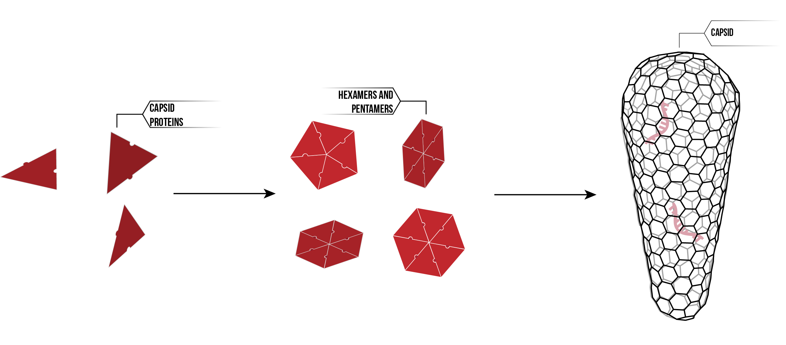

The phenomenon of self-assembly is ubiquitous in molecular biology. Individual subunits interact with their closest neighbours on a relatively simple level, but on a grand scale this leads to the incredible complexity observed in living systems. Our project aims to further understanding of self-assembly using the HIV capsid as a model system. This capsid is a fullerene cone which encapsulates the RNA genome of HIV. It assembles spontaneously from approximately 1500 copies of the HIV capsid protein (HIV CA-1), which themselves form approximately 250 hexamers and exactly 12 pentamers before folding into the three dimensional lattice of the capsid.
The structure of